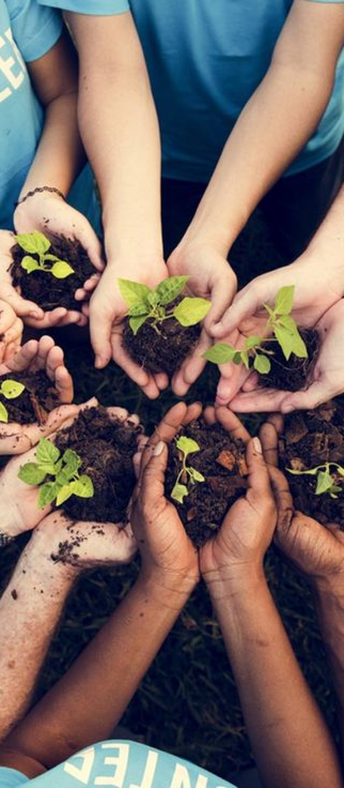

Community Events
1
Farmers Workshops
Join insightful workshops led by local farmers, providing an opportunity to learn about sustainable practices, gardening tips, and food preparation.
2
3
Tastings and Demos
Experience a variety of tastings and live demonstrations, where farmers and vendors showcase the taste and quality of their produce and goods.
Food Cultivation Events
Participate in events aimed at educating the community on food cultivation, ranging from seedling planting to sustainable gardening practices.
